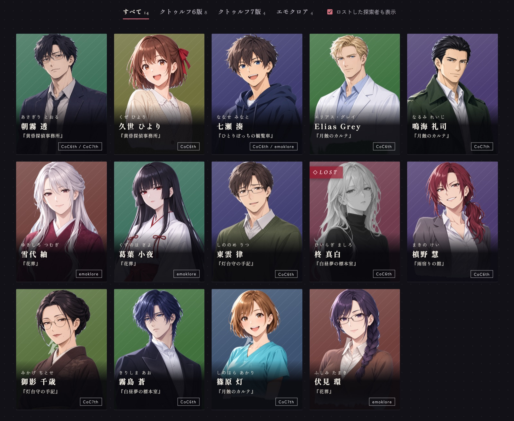
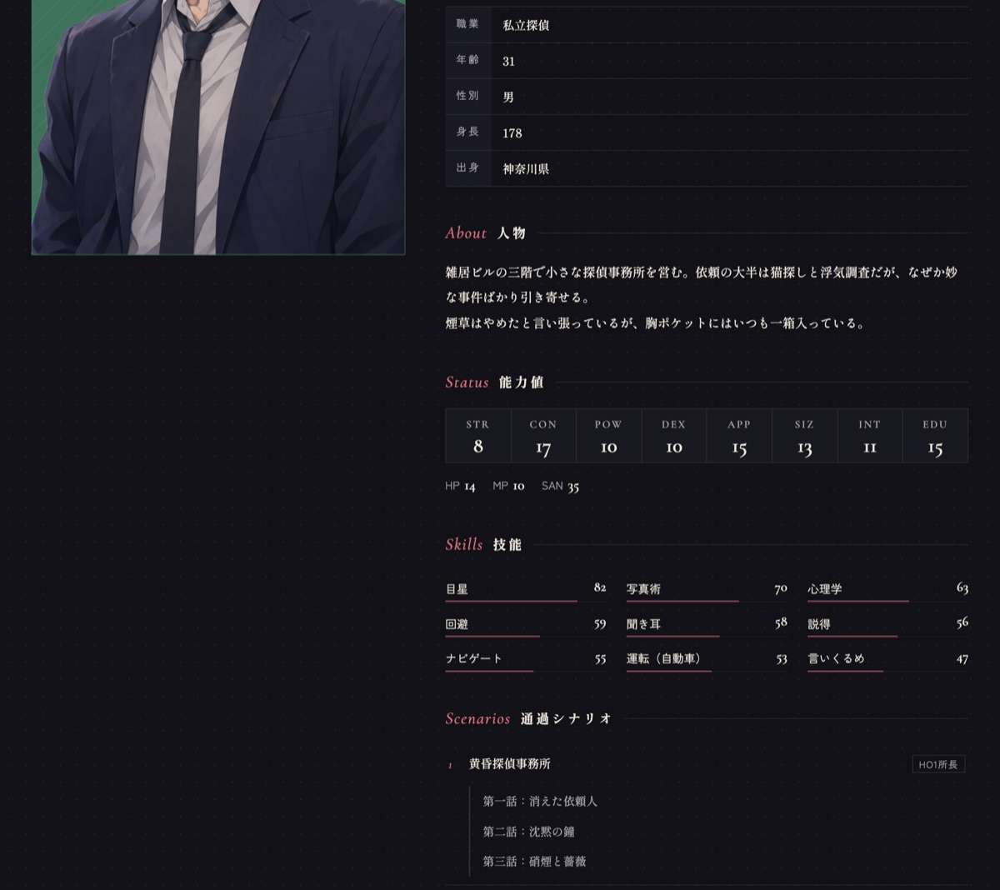
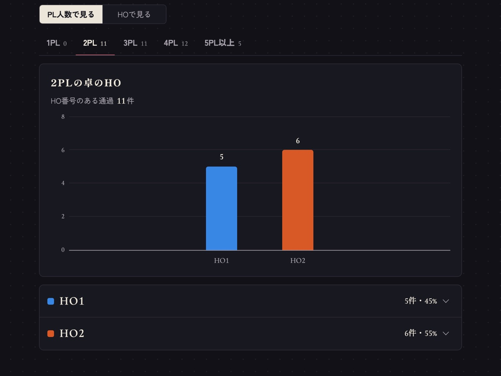

しくみ
-
拡張機能で送る
シートのサイトで「シート帳へ送る」を押すと、能力値・技能・チャットパレットなどを読み取って Notion に追加します。マイページから新しいキャラクターだけをまとめて送ることもできます。
-
Notion で管理する
シートは Notion のデータベースに1キャラクター1ページで入ります。HP やメモ、通過したシナリオは Notion で書き足します。
-
一覧ページで探す
GitHub Actions が3時間ごとに Notion を読み、システム・タグ・技能値で絞り込める一覧ページを作り直します。
実際の画面

ギャラリー
Notion に集めたキャラクターを、立ち絵つきで並べるページです。下の画面とサンプルページは説明用に作ったもので、キャラクターの名前・立ち絵・通過シナリオはすべて架空です。実際のキャラクターシートのものではありません。



できること
技能値で探す
「目星70以上」「図書館>=60 6版」のように、技能の値でキャラクターを絞り込めます。
システムとタグで分ける
クトゥルフ神話TRPG 6版・7版、エモクロア、ケダモノオペラなど、システムごとに切り替えられます。
通過シナリオを記録
元のシートにある通過シナリオや HO を拾って、Notion に書き足します。シナリオ別の一覧も見られます。
生存とロストを分ける
ロストしたキャラクターは分けて表示します。同じ名前のキャラクターを1人にまとめることもできます。
読み取れるサイト
- いあきゃら
- キャラッシュ
- vinsanet
- ゆとシート
- キャラクター保管所
- キャラクターシート倉庫
- フタリソウサのスプレッドシート
サイトとシステムによって、読み取れる項目は違います。詳しくは拡張機能の README にまとめています。
閲覧ページは非公開です
一覧ページにはキャラクターの立ち絵が並びます。立ち絵は描いてくださった方の作品なので、著作権に配慮して閲覧ページは公開していません。
このページと GitHub では、しくみと拡張機能のコードを公開しています。見た目はサンプルのギャラリーで確かめられます。サンプルは説明用に作ったもので、載っているキャラクターの名前・立ち絵・通過シナリオはすべて架空です。実際のキャラクターシートのものではありません。
安全性について
- Notion のトークンは、拡張機能を入れた Chrome の中にだけ保存します。作者を含め、ほかの人には送られません。
- 拡張機能が直接やりとりする外部のサービスは Notion だけです。
- ログインが必要なサイトでは、そのサイトのページの中で、いつも表示に使っている仕組みのまま読み取ります。ログイン情報を拡張機能や Notion に渡すことはありません。
質問・不具合の報告
分かりにくいところや動かないところがあれば、GitHub の Issue で気軽に教えてください。